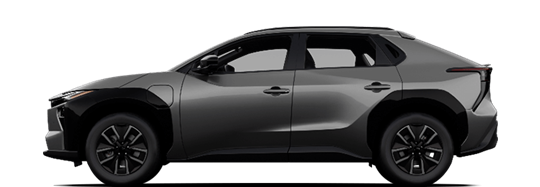

試算結果｜能源費
換車後一年可省的能源費
NT$25,854
依年里程 15,000 km，能源費約降低 70.6%。
五年能源費差額NT$129,269
這裡比較目前車輛的能源費與 bZ4X 的充電費。五年差額按相同條件估算，尚未計入購車價差、折舊、保險、充電設備及額外固定費用。
現有車、油電、bZ4X：每月省多少？這一趟又省多少？

Toyota 台灣官方車圖可搜尋 2003 年起的歷年車款與較早經典車。請核對年式、排氣量與版本；「指南年度」是送測資料年度，不能當成出廠年份。預設顯示汽油與油電車，純電或柴油可切換動力。缺少的馬力或油耗可手動填入。
歷年資料來源包含能源署油耗指南與 Yahoo 汽車台灣目錄，媒體資料不等於原廠規格。不同年份、測試程序與等級不可直接互換；指南年度非出廠年。未確認欄位會留白，實際油耗可自行修正。資料仍可能缺少部分停產版本；使用油種請依車主手冊確認。
依年里程 15,000 km，能源費約降低 70.6%。
這裡比較目前車輛的能源費與 bZ4X 的充電費。五年差額按相同條件估算，尚未計入購車價差、折舊、保險、充電設備及額外固定費用。
加權電價 4.80 元/度 · 未計充電損耗
bZ4X 最大扭力 27.4 kg-m，前輪傳動。馬力差異不直接代表加速差異，仍需考量車重、載重與路況，並透過試乘確認。
電池零件與容量維持適用不同的保證條件。年限與里程以先到者為準。
新車基本保證涵蓋動力電池組。與電池容量無關的組件問題，依基本保證條件處理。
保證期間內，動力電池容量維持至少 70%。容量由原廠檢測，符合保證條件時，維修或更換方式依原廠判定。
目前收錄的官方資料未公布整組電池更換價格。可向經銷商索取含零件與工資的報價，並確認哪些費用適用保證。
除了馬力與費用，也把停車、充電和常走的路線一起考慮。
先確認停車位可否裝充電設備、安裝費用與常用充電站。bZ4X 充電接頭：直流快充 CCS1、交流充電 SAE J1772。
743 km 是 NEDC 測試值，實際續航會受天候、載重、空調與駕駛習慣影響。長途請規劃充電並保留餘量。
官方規配列有後廂 110V 供電。使用前請核對功率、適用電器與手冊限制，勿直接以電池容量推算整夜供電。
另比較購車價差、充電設備、保養、保險、稅費與折舊。純電車仍需定保，官方建議每半年／1 萬公里，先到者為準。